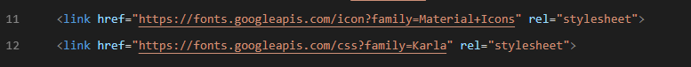
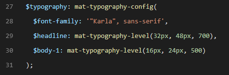
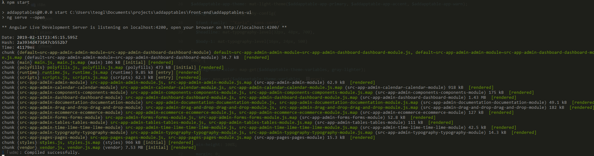
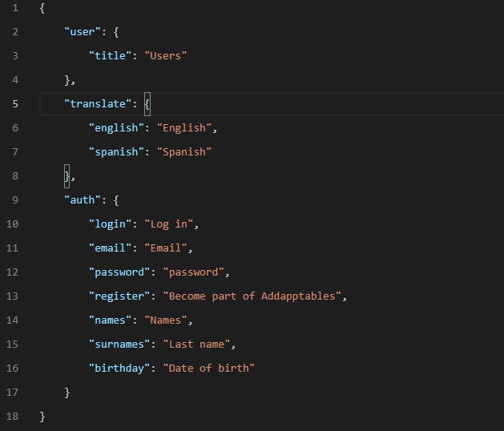

Addapptables Angular 7 Template
thank you for downloading Addapptables template
If you have any questions, feel free to email me via my user page with the contact form Here
getting started
how to start :
step 1 - Unzip the zip file that you have downloaded from Addapptablestheme. Inside the zip file, you will find the Skeleton Project (addapptables-x.x.x-skeleton.zip) along with the Demo Project (addapptables-x.x.x-demo.zip)
step 2 - For this documentation, we will be using the Skeleton Project which is the exact same template minus the demo content so you don't have to clean up the demo content.
step 3 - Extract the contents of the zip file (addapptables-x.x.x-skeleton.zip) into a folder that you will work within. For this documentation, we will refer that as "your work folder".
Dependencies :
step 1 - Angular is the core of Addapptables.
step 2 - Angular Material is the primary UI library of the Addapptables. It's a set of Angular components, directives and services that implements Material Design Specifications and it's in active development by Google.
step 3 - Angular Cli is a tool to initialize, develop, scaffold and maintain Angular applications. You can find more information about at: angular-cli
installation
how to install :
step 1 - Install Nodejs link
step 2 - Open terminal and type npm install -g @angular/cli
step 3 - Open terminal and navigate into your work folder, run the following command and wait for it to finish npm install
step 4 - Type npm start
fonts
This template uses google fonts, you can change the fonts for the paragraph or the headings
step 1 - Go to google fonts Here and find a font you like.
step 2 - Change font in the index.html file
step 3 - Change lines 28 with your new font in the style.scss file
icons
This template uses Material icons, you can change any of the icons.
step 1 - Go to Material icons Here and find an icon you like but make sure to leave any extra classes you find in the Index.html file.
step 2 - Change the icon in the component file
Server
how to run:
Step 1 While still in your work folder, run the following command in the console application:npm start
And that's it. Angular CLI will take care everything and start the Addapptables. You can check out your console application to get further information about the server. By default, it will run on http://localhost:4200 but it might change depending on your setup. Also, there are other commands available in Addapptables which may help you in your development. To see the complete list of available npm commands, check the package.json file.
Reloading the Server The ng serve command will watch your files and reload the page for you as you make changes. But for some reason, if you need to manually restart the server, you can do it by pressing Ctrl + C on your keyboard while in the console application and then run the following command once again:npm start
Production
Build :
The following command builds the application into an output directory: ng build
The build artifacts will be stored in the /dist directory. All commands that build or serve your project, will delete the output directory.
Bundling & Tree-Shaking (AoT) :
To build your app with AoT (Ahead of Time) compiler, use the following command: ng build
or if you want to serve with AoT, use the following: ng serve --prod
This will make use of uglifying and tree-shaking functionality while serving the app from the memory.
Running unit tests
ng test Tests will execute after a build is executed via Karma, and it will automatically watch your files for changes.
Running end-to-end tests
ng e2e Before running the tests make sure you are serving the app via ng serve. End-to-end tests are run via Protractor.
For more information about angular-cli commands, check the Angular cli.
Directory structure
Addapptables has a fairly simple directory structure. All source code that you will need stays inside the /src folder. Once you build your app, a /dist folder will appear at the root which will contain the built app. You can simply upload the contents of it to your server to start running your app.
Source directory (/src)
The source folder has the general Angular CLI project structure along with an additional folder called /@addapptable which contains the core elements of the Addapptables.
/app
This folder contains the AppComponent along with the following directories. Everything that being contained inside these folders are belong to your app and you can edit them however you like while building your app:
- /@redux: Store files.
- /admin: Pages and page layouts.
- /auth: Authorization pages.
- /localication: ngx-translate i18n
- /shared: shared components
Multi language
Addapptables uses ngx-translate module and supports multiple languages and translations.
Usage
In order to use the translations, create your translation file within the module you want to use the translations. For example, for the menu app, create assets/i18n/en.json file. The structure of the translation file is important it must define the translation data: 
Components
Addapptables has created several components for the use of the community. You can see these components with the following links